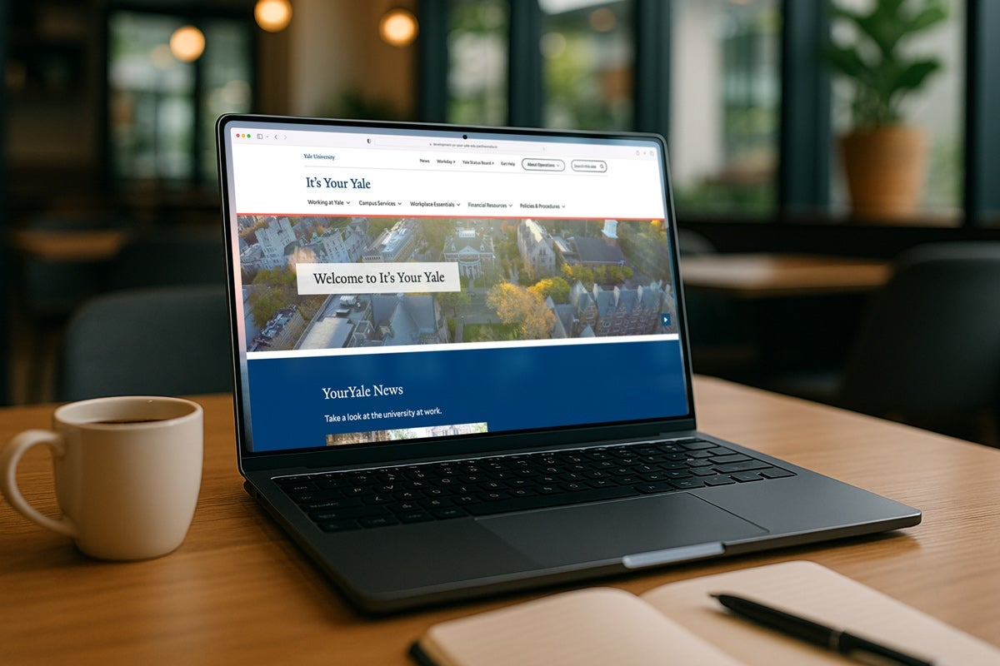

— Introduction
Website Manager & Communications, at Yale University.
I manage a portfolio of 18 university websites and led the technical delivery of the It's Your Yale redesign — migrating thousands of pages in partnership with Yale ITS and vendor Four Kitchens, work later recognized platform-wide as YaleSites 2.0.
— Currently
Open to technical lead & platform roles.
Deepening my platform and development skills while leading web projects at Yale. Always glad to talk shop.
Get in touch— What I Do
Where content meets the platform.
Web Platform Management
18 university sites and over 20 content contributors managed.
Technical Project Leadership
Technical lead on the It's Your Yale redesign — thousands of pages migrated with Yale ITS and Four Kitchens. View case study
Communications & Design
Editorial style guides, analytics dashboards, and campus-wide content standards.
— Case Study
YaleSites 2.0 & the It's Your Yale Redesign
It's Your Yale is the university's flagship staff and faculty resource site — one of the 18 sites I manage, and by far the largest. In 2025 it went through a full redesign and platform migration, and I led the technical side of that work for the It's Your Yale team.

The challenge
It's Your Yale had outgrown its structure. Content was organized around org charts instead of what staff and faculty were actually trying to do, search was inconsistent, and accessibility gaps made some content hard to reach. Fixing that meant more than a redesign — it meant migrating thousands of pages onto a new content model without breaking the workflows the Yale community relies on every day.
What I led
- Represented the It's Your Yale team in requirements gathering and design reviews with Yale ITS and vendor partner Four Kitchens, translating staff and faculty feedback into technical requirements.
- Served as technical lead working directly with Four Kitchens throughout the build, coordinating the migration of thousands of pages onto the new content model.
- Communicated scope, progress, and risk to senior leadership and subject-matter stakeholders across university operations, finance, and benefits.
- Designed and implemented a content governance process so the new services-first structure would stay accurate and consistent after launch.
The outcome
The redesigned It's Your Yale launched August 13, 2025, reframing content around services — like Getting Around Yale and Dining Around Campus — instead of org charts, and raising the site's accessibility score. It's Your Yale's contribution to the underlying platform was substantial enough that Yale ITS built much of it into a university-wide release they named YaleSites 2.0 — new Content Collections navigation, flexible section layouts, and dozens of other improvements now available to every YaleSites site, not just ours.
"Collaborating with YaleSites and Four Kitchens allowed us to upgrade the It's Your Yale website to support a wide range of content. Flexible layouts help us feature both service-related content and imagery in the Your Yale News section, while enhanced tagging improves content relationships and makes related information easier to find."
— The It's Your Yale Team, YaleSites 2.0 announcement
"Users visit It's Your Yale with specific objectives, such as obtaining support, accessing resources, or completing administrative tasks. The services will be organized into clear, user-focused categories."
— Lisa Sawin, Senior Project Director for Operations Initiatives
Click any role to expand the details.
-
Website Manager
Manage a portfolio of 18 university websites, including the flagship It's Your Yale, coordinating a network of 20+ content contributors to keep content accurate, consistent, and free of duplication.
- Served as technical lead on the It's Your Yale redesign, partnering with Yale ITS and vendor Four Kitchens for the first time and delivering a migration of thousands of pages on time and under budget — work later recognized platform-wide as YaleSites 2.0.
- Built and maintained an editorial and site style guide that standardized voice, tone, and presentation — work that grew into a campus-wide effort to scale content standards.
- Supported an AI chatbot assistant (QA testing, launch, and ongoing accuracy) to reduce tier-zero support requests, and joined AI working groups shaping responsible AI practices in university communications.
- Led analytics strategy through a platform transition: migrated to Google Analytics 4 and Google Tag Manager, and built self-service LookerStudio dashboards that let clients track their own content performance.
- Acted as project lead on multiple site-upgrade projects, providing timeline structure, requirements gathering, and strategic guidance for senior leadership and faculty stakeholders.
-
Graphics / Web Assistant II
- Designed, edited, and developed website content, managing incoming web requests end to end.
- Identified and resolved website problems and tested pages for accuracy and functionality.
- Designed and formatted print materials including publications, brochures, and newsletters.
-
Communications Intern
- Created and compiled content for newsletters, social media, and articles.
- Managed social media platforms, optimized the department website, and designed graphics for publications.
-
Student University Photographer
- Photographed events and subjects across a range of university needs.
- Collaborated with departments and external partners to support the university brand, and updated website content using Drupal templates.
— My Story
About
I'm a website manager in Yale's Office of Public Affairs & Communications, where I sit at the intersection of content and technical delivery — managing a portfolio of sites, leading upgrade projects, and helping communicators across campus do more with the web.
I hold an MBA in Management from the University of Hartford and a B.S. in Public Health from Southern Connecticut State University. I care about clear communication, accessible design, and building things — whether that's a large university platform or a small app for my own family. I'm working toward a more technical lead role and actively deepening my platform and development skills.
— Toolbox
Skills & Tools
Platforms & CMS
- Drupal
- SharePoint
- WordPress
- SDL Tridion
Analytics & SEO
- Google Analytics 4
- Google Tag Manager
- Search Console
- LookerStudio
- Siteimprove
Design & Content
- Adobe Suite
- Salesforce Email
- AirTable
- Qualtrics
- Microsoft Office
Practice
- Technical project leadership
- Web accessibility
- Requirements gathering
- AI-assisted development
— Contact
Any type of query & discussion.
Have a project or role in mind? Send a message and I'll get back to you.